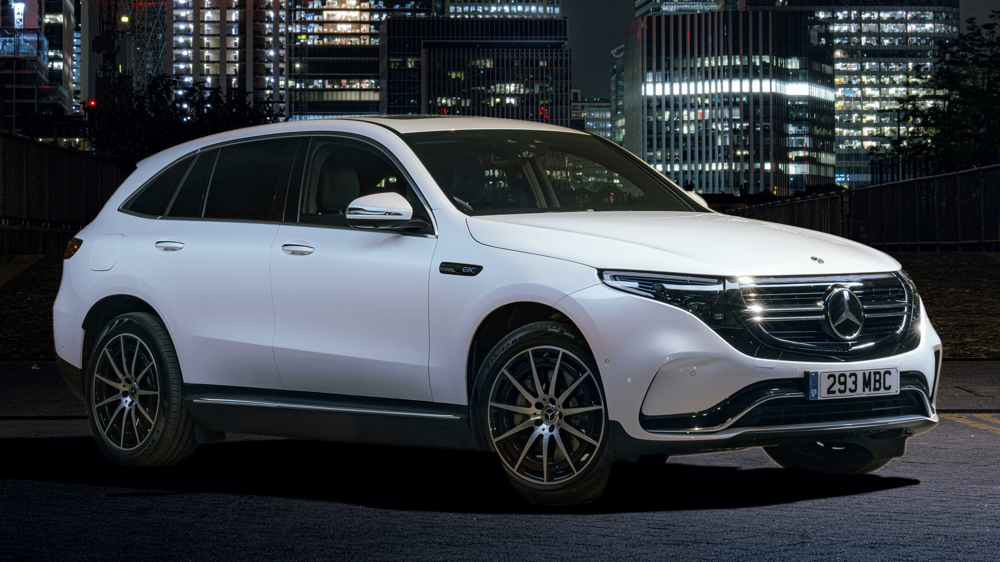

Представьте себе, что Вы могли бы все начать сначала.

Первый кроссовер немецкого автогиганта с «нулевыми выбросами» удивил плавностью и комфортом в дальних поездках, проявив себя даже лучше, чем Tesla Model S, Porsche Panamera, Audi Q7 e-tron и Lexus LS.Экологическая чистота, тихая работа и современный характер электрического привода впечатляют. Внешне это выражается в присущих марке «Мерседес-Бенц» четких формах и скупых линиях, а также в инновационных элементах дизайна.